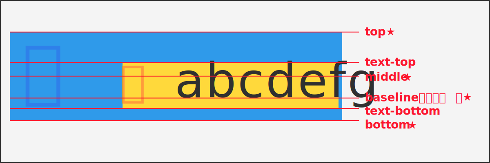

vertical-alignプロパティとは
主にインライン要素（テキストや画像など）やテーブルセル内のコンテンツが、
行ボックスやセル内で垂直方向にどこに配置されるかを指定するためのもの。
値は上記の赤字以外にも多数あります。（★の値を利用することが多い）
テキスト（インライン要素）の場合
親 abcdefg
画像（インライン要素）の場合
親
表（テーブルセル）の場合
| どうぶつ | 好きなたべもの | 好きな色 |
|---|---|---|
| うさぎ | にんじん | オレンジ |
| くま | はちみつ | きいろ |
| ねこ | さかな | みずいろ |